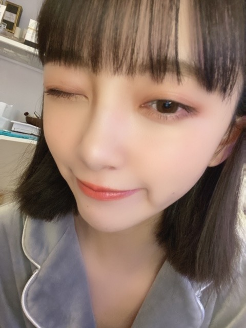

2020/0404Satばっさり
Mステでサプライズお披露目しましたが、
髪切りました
ずっと伸ばしててやっとロングになったのですが
思い切って久しぶりに短く☺︎
ロング派の人、すみません
ちょくちょくInstagramとかブログにロング写真も
載せますね
今回は
切りっぱなしボブ でちょっと重めな感じです!

サプライズ成功かな？
サプライズ成功かな？
Mステで初お披露目にしてびっくりさせたくて...
どうですか...？
見つけてもらえたかなぁ
どうですか...？
見つけてもらえたかなぁ
仕事場に行ったらみんな気づいてくれて
ひなちまがかわいいって言いにきてくれて
いくちゃんもまいちゅんもれんかも
好きって言ってくれて
切り立ての毛先を白石さんといくちゃんと
切り立ての毛先を白石さんといくちゃんと
松村さんと高山さんに囲まれてふさふさ触られて
日奈子にもボブを持ち上げられて
毛先が喜んでました。笑
すぐに気づいて褒めてくれるメンバーが
日奈子にもボブを持ち上げられて
毛先が喜んでました。笑
すぐに気づいて褒めてくれるメンバーが
大好きだなぁと改めて☺︎
切りすぎたかなぁと思ってたからよかった。


そういえば乃木坂に入って
初めて髪をショートにした時も3月末とかだったなぁ
懐かしい
髪っていろんなものが詰まってるので
今は心も頭もさっぱりしてます
春ですね、
あ〜
5月27日にはよならんかな〜
写真集いい感じに仕上がってます!
早く見てほしいですᕦ(ò_óˇ)ᕤ✨
ちなみに表紙が決まりまして
通常版1種、限定盤3種の計4種類です!
まだお見せできないのですが
動画で私が説明してますので、是非。
さまざまな特典も先着であります!
御予約はこちらから☺︎
ふふふ

いま、ゴルゴンゾーラを聴いているのですが
ゴルゴンゾーラのレコーディングの時、
実は風邪をひいていて声がハスキーになっていまして
"変わりものばかりいつも惹かれてしまうのはなぜだろう"
"もっとアクが強い人と喧嘩をしながら"
改めて聞いてたら全然声違うやん！
ってなりました笑
話急に逸れたけど
よかったら注目してみて聞いてください✰
絢音がいつもゴルゴンゾーラを褒めてくれるの笑
かわいい歌だねって
私が特に好きな歌詞は
"趣味が悪かろうがなにを言われようが自分が良けりゃいいでしょ？"
"だれからも好かれてちゃ独り占めできない"
かなぁ
みなさんのゴルゴンゾーラ での
好きな歌詞はありますか？
変わり者が変わり者を好きになった感じが
かわいくて好きな世界観だし
普通じゃ物足りないじゃん!っていう邪道もいいし
チーズ好きだし
モッツァレラよりゴルゴンゾーラだし
好きが詰まった曲ですね
映画でいう、"アメリ"とか"勝手にふるえてろ"みたいな世界観です
また好きな歌の好きな歌詞紹介します!
好きな歌を好きな映画に例えるのもわかる人にはわかりそうでいいかも！
これ楽しい☺︎！
普段歌詞見ながら音楽聞く派なので
話したくて仕方ないんです。笑

ちなみに
最近観て面白かった映画は
ハッピーデスデイ
最低で最高のサリー
です☺︎
この2つの映画は全然違うジャンルだけど
これをみて感じたことは、
考えてから言葉を発さないといけないってことと
毎日を一生懸命に生きるって大事だなということ
取り消せないものの1つに"言葉"があるなぁと思っていて
何気ない一言で相手を傷つけてたりするし
自分の正直に何でも言う部分は大事にしたいけど
言葉を言う前に考える瞬間も本当に大切だなって。
だってその一言でいろんなことが変わってしまうんだから。ハッピーデスデイを見て痛感しました
無意識に人を傷つけることほど
怖いものはないですもんね...
人生やり直せたらって思っても
やり直しはもちろんきかないし
だからこそ自分に相手に、正直になって
毎日を生きるって大切だなぁと。
不器用だったら変に器用ぶらないで、
不器用らしくぶつかっていこ〜
ワハハ
急募
口内炎が治る方法
ではは
2020/04/04 12:36
コメント(649)
未央奈ブログ更新ありがと〜！自分はかなりショート派なのでMステ見た時に髪切ったぁ！と思わず叫んでしまいました笑ゴルゴンゾーラは自分も誰からも好かれてちゃ独り占めできないのとこが一番好きです！あの曲なんか聴けば聴くほどハマってしまう〜自分は今年大学受験をやって、ダメだったので浪人してもう一年頑張ります！無事に大学決まったら絶対に未央奈の握手会行きます！
ブログありがとう！
今回の髪型もほんとにかわいいです！！！
サプライズだったからびっくりした！！
自分も歌詞見ながら聞く派だ〜ゴルゴンゾーラやと趣味が悪かろうが・・・のところが好き！
あと最近、関取花さんの「もしも僕に」っていう曲の歌詞がすごい心に響いてます。よかったら聞いてみて〜
今回の髪型もほんとにかわいいです！！！
サプライズだったからびっくりした！！
自分も歌詞見ながら聞く派だ〜ゴルゴンゾーラやと趣味が悪かろうが・・・のところが好き！
あと最近、関取花さんの「もしも僕に」っていう曲の歌詞がすごい心に響いてます。よかったら聞いてみて〜
切りっぱなしボブ、すごく似合ってます 可愛い
未央奈好き～ まいやんとかいくちゃんまっちゅんとの絡みもすきー！！！！昨日のMステめっちゃ可愛かった♡すごい似合ってたよ！！！
色暗めのショートもめっちゃ似合うやんか〜
女子が急に髪切るといろいろ妄想しちゃう男子（どんだけ知識、経験増えて年重ねても精神は一生中高生）の1人です
お家で楽しめる映画、音楽鑑賞さりげなーくススメててエライ子だな〜
「出る杭は打たれる」上等、The squeaky wheel gets oil, yo
Just be yourself an’ let all other crap go
女子が急に髪切るといろいろ妄想しちゃう男子（どんだけ知識、経験増えて年重ねても精神は一生中高生）の1人です
お家で楽しめる映画、音楽鑑賞さりげなーくススメててエライ子だな〜
「出る杭は打たれる」上等、The squeaky wheel gets oil, yo
Just be yourself an’ let all other crap go
ブログ更新ありがとう！
やっぱり未央奈さんは短いのが一番似合う！
体調に気をつけてこれからも頑張ってください！
やっぱり未央奈さんは短いのが一番似合う！
体調に気をつけてこれからも頑張ってください！
ブログ更新ありがとう！！昨日のMステお疲れ様でした！！髪切った未央奈ちゃんめっちゃ可愛かったよ！！ロングも良いけど短い未央奈ちゃんも可愛いよ！！
放送は、録画したの見ました。
短くなっててビックリ！
やっぱ短い方が、最高に似合いますよ。
好き！笑
短くなっててビックリ！
やっぱ短い方が、最高に似合いますよ。
好き！笑
こんにちわ。
ボブ未央奈可愛い。Mステお疲れ様でした。
ゴルゴンゾーラってほんと可愛い曲だよね。
口内炎早く治すにはお薬ですかね。あとビタミンＣ摂取するのも効果的です。早く治るといいね。
ボブ未央奈可愛い。Mステお疲れ様でした。
ゴルゴンゾーラってほんと可愛い曲だよね。
口内炎早く治すにはお薬ですかね。あとビタミンＣ摂取するのも効果的です。早く治るといいね。
僕は短い方が好きなので嬉しいです
かわいい❤︎堀ちゃん大好きです
ボブでもロングでもかわいい！
似合ってるよーー、
似合ってるよーー、
Mステで見た瞬間可愛すぎて声出た笑
モッツァレラ嫌いじゃないけど らへんが好きです！
口内炎は軟膏を塗ると治る！
口内炎は軟膏を塗ると治る！
ショートの未央奈もボブの未央奈もロングの未央奈も全部好きだよー！
ショートヘア〜
可愛い！！！
可愛い！！！
更新ありがとう‼︎
気持ちロング派ですけど、未央奈さんはなんでも似合うのでショートも好きです(^_^)
早く直接お会いしたいです‼︎
今日も外出しないで、どうぶつの森で遊んでます笑
いつも元気をありがとうございます
気持ちロング派ですけど、未央奈さんはなんでも似合うのでショートも好きです(^_^)
早く直接お会いしたいです‼︎
今日も外出しないで、どうぶつの森で遊んでます笑
いつも元気をありがとうございます
未央奈のボブは世界一だよ⭐️
口内炎はビタミンを取ること(トマトとか)自分も野菜たくさん食べて治しました
口内炎はビタミンを取ること(トマトとか)自分も野菜たくさん食べて治しました
めっちゃ似合ってて可愛いです。
ブログ更新多くて嬉しいです。
可愛いです！
ブログ更新多くて嬉しいです。
可愛いです！
未央奈ちゃんブログ更新ありがとう！
口内炎治すにはヨ－グルトや納豆ご飯を食べて治してたので、良ければ試してみてね。人参やトマトなどの緑黄色野菜も効果が良いよ！
口内炎治すにはヨ－グルトや納豆ご飯を食べて治してたので、良ければ試してみてね。人参やトマトなどの緑黄色野菜も効果が良いよ！
ブログ更新ありがとう〜！メンバーとの微笑ましい日常が聞けて幸せ(*´-`)
私は口内炎になったとき、シールみたいに貼る薬使ってるよ！まぁあまりなったことないからほんと数回しか使ったことないけど…でも痛くなかったし患部に直接効くからすぐ治るような気がする！たぶん笑。よかったら買ってみて！
私は口内炎になったとき、シールみたいに貼る薬使ってるよ！まぁあまりなったことないからほんと数回しか使ったことないけど…でも痛くなかったし患部に直接効くからすぐ治るような気がする！たぶん笑。よかったら買ってみて！
野菜食べてチョコラBBを飲むですかね
早く会いたいなぁ早く写真集見たいなぁ〜
かっらいラーメンを食べると治るかも？笑
ブログ更新ありがとう
黒髪ボブ未央奈好き
めっちゃ可愛い
黒髪ボブ未央奈好き
めっちゃ可愛い
ブログ更新ありがとう
最近気づ付けないように言葉遣いを気をつけてるけど癖ってなかなか治らないからこれからも気をつけていきたい！！
ショートカットめっちゃ似合ってて可愛いよ(๑ ᴖ ᴑ ᴖ ๑)ロング派でもショート派でもあるからどっちも嬉しいのは得しかない気がする！！
最近気づ付けないように言葉遣いを気をつけてるけど癖ってなかなか治らないからこれからも気をつけていきたい！！
ショートカットめっちゃ似合ってて可愛いよ(๑ ᴖ ᴑ ᴖ ๑)ロング派でもショート派でもあるからどっちも嬉しいのは得しかない気がする！！
髪めっちゃいいです！
ビタミンとってね～
Vitaminをとりまくる！
歯科大生です。口内炎は原因によって治療法が変わります。
例えば、感染症なら抗菌薬や抗真菌薬。また、原因は粘膜への刺激や医療行為、自己免疫疾患などたくさんあるので歯医者さんに行って原因を調べてもらって薬などを貰うのが1番だと思います❗️
例えば、感染症なら抗菌薬や抗真菌薬。また、原因は粘膜への刺激や医療行為、自己免疫疾患などたくさんあるので歯医者さんに行って原因を調べてもらって薬などを貰うのが1番だと思います❗️
みおちゃんブログ更新ありがとう！✩°｡⋆⸜(*˙꒳˙* )⸝
切りっぱなしボブめちゃ可愛い( ;ᯅ; )！！ロングも好きだけどね！
口内炎はビタミンとったら治るのかなー？って思うけどみおちゃんなら言われなくても取ってそう！！とりあえず今日も健康で過ごせますように！
切りっぱなしボブめちゃ可愛い( ;ᯅ; )！！ロングも好きだけどね！
口内炎はビタミンとったら治るのかなー？って思うけどみおちゃんなら言われなくても取ってそう！！とりあえず今日も健康で過ごせますように！
うぇい
みおなの黒髪ボブ復活とってもうれしいです！
似合いすぎです
似合いすぎです
いゃ～めっちゃ似合ってまっせ❕
可愛いぞ❗️
Mステもめっちゃ良かったぁ～ ❕
可愛いぞ❗️
Mステもめっちゃ良かったぁ～ ❕
未央奈ちゃん、ブログの更新ありがとうございます！
Mステではビックリしたけど、ボブも外ハネな感じも似合ってます。
わたしも一昨日髪をバッサリ切りました！
おそろい嬉しいです！
口内炎は、殺菌効果のあるうがい薬でたくさんうがいをして治しています！
体調には気をつけて、お仕事頑張ってください！
Mステではビックリしたけど、ボブも外ハネな感じも似合ってます。
わたしも一昨日髪をバッサリ切りました！
おそろい嬉しいです！
口内炎は、殺菌効果のあるうがい薬でたくさんうがいをして治しています！
体調には気をつけて、お仕事頑張ってください！
私はボブ未央奈派なので、バッサリ切ってって嬉しかったです。髪とかは染めないんですか？
口内炎はトマトのぐちゅぐちゅしてるところを塗り込むと早く良くなるらしいですよ！
チョコラBBを飲むと早く口内炎治ります。
口内炎の薬を飲む！笑:
堀さんのショートが1番好きです
ブログ更新ありがとう！！
堀ちゃんはどの髪型も似合ってて可愛いけど自分はボブ未央奈が1番可愛くて好みだから昨日テレビで見た時とても嬉しかった(≧◡≦)
ゴルゴンゾーラで1番好きな歌詞は
"印象にさえも残らないような
ごく普通の味じゃ 満足できやしないグルメなんだよ"
が好きかなー
印象に残れるような人間になりたいなぁと思います！！
堀ちゃんはどの髪型も似合ってて可愛いけど自分はボブ未央奈が1番可愛くて好みだから昨日テレビで見た時とても嬉しかった(≧◡≦)
ゴルゴンゾーラで1番好きな歌詞は
"印象にさえも残らないような
ごく普通の味じゃ 満足できやしないグルメなんだよ"
が好きかなー
印象に残れるような人間になりたいなぁと思います！！
未央奈おはよー！
ブログありがとう！！！
Mステお母さんと一緒に見てて未央奈が髪の毛切ったことに気がついて家族でビックリした！！笑
俺もめっちゃ驚いたけど未央奈はどんな髪型でも未央奈だし可愛いから良き！！
ロングもショートもボブも好き！！
黒髪パッツンロング好きな人多そうだよね〜
ハッピーデスデイの感想ありがとう！！
1日を何度もやり直せることで気がつくことがあるってことは、普段何気なくすごしちゃってる1日って沢山反省することがあるんだろうなあ、って思えた。
言葉には本当に責任をもって気をつけるね。
口内炎！！！痛いよね！！！
俺も今喉の奥と口の中に口内炎が6個も出来てるの！！笑めちゃくちゃ痛い。。。
【治す方法！！！】
・イソジンのうがい薬を使って口の中を清潔に保つこと！
・ビタミンB、Cとかの栄養を沢山とる事！ビタミン剤を摂取しよう！
・睡眠時間をしっかりとる事！不規則な生活をなるべく避けること！
かな！！
口内炎が一刻も早く治りますように。
ブログありがとう！！！
Mステお母さんと一緒に見てて未央奈が髪の毛切ったことに気がついて家族でビックリした！！笑
俺もめっちゃ驚いたけど未央奈はどんな髪型でも未央奈だし可愛いから良き！！
ロングもショートもボブも好き！！
黒髪パッツンロング好きな人多そうだよね〜
ハッピーデスデイの感想ありがとう！！
1日を何度もやり直せることで気がつくことがあるってことは、普段何気なくすごしちゃってる1日って沢山反省することがあるんだろうなあ、って思えた。
言葉には本当に責任をもって気をつけるね。
口内炎！！！痛いよね！！！
俺も今喉の奥と口の中に口内炎が6個も出来てるの！！笑めちゃくちゃ痛い。。。
【治す方法！！！】
・イソジンのうがい薬を使って口の中を清潔に保つこと！
・ビタミンB、Cとかの栄養を沢山とる事！ビタミン剤を摂取しよう！
・睡眠時間をしっかりとる事！不規則な生活をなるべく避けること！
かな！！
口内炎が一刻も早く治りますように。
あまり外に出れないご時世の中唯一の救いと言ってもいいブログ更新ありがとうございます。いつも楽しみにしてます！
Mステで髪切ってたの見てビックリしすぎて声出てしまいました！
でもやっぱりめちゃくちゃ似合ってて良きです！
写真集の表紙決まったみたいで、もう予約はしてるので届くのが楽しみです！
家に帰ったら手洗いうがいして消毒して感染しないように十分気をつけてくださいね！
次のブログ更新も楽しみにしてます！
Mステで髪切ってたの見てビックリしすぎて声出てしまいました！
でもやっぱりめちゃくちゃ似合ってて良きです！
写真集の表紙決まったみたいで、もう予約はしてるので届くのが楽しみです！
家に帰ったら手洗いうがいして消毒して感染しないように十分気をつけてくださいね！
次のブログ更新も楽しみにしてます！
堀ちゃん、ブログ更新ありがとう！！
口内炎を治すにはビタミンCを摂るといいと聞きます。
どうか分かりませんが……
あとは気合いです！！
写真集予約しました！！
永遠に「堀命」です！！
口内炎を治すにはビタミンCを摂るといいと聞きます。
どうか分かりませんが……
あとは気合いです！！
写真集予約しました！！
永遠に「堀命」です！！
ボブ未央奈大好き！
ゴルゴンゾーラは3人とも歌声に違う良さあっていいよね！
未央奈の趣味が悪かろうがの所特に好き！
口内炎は辛いけど睡眠はしっかりとってね。
ブログありがとう！
ゴルゴンゾーラは3人とも歌声に違う良さあっていいよね！
未央奈の趣味が悪かろうがの所特に好き！
口内炎は辛いけど睡眠はしっかりとってね。
ブログありがとう！
最後笑ったww
みおなはショート派です。
以上！
みおなはショート派です。
以上！
ブログ更新ありがとう(*´ω｀*)ﾉ
Mステお疲れ様でした〜!
まいやんの偉大さを感じられるパフォーマンスでみんなすごい楽しそうにしてたのにすごい感動しました( o̴̶̷᷄ ·̫ o̴̶̷̥᷅ )
個人的にはロングよりボブの未央奈が好きだから久しぶりに見れて嬉しかったです(*≧∀≦*)
写真集､絶対買います。今から発売が待ち遠しい٩(๑❛ᴗ❛๑)۶
こんなご時世で大変だけど健康第一に頑張ってください٩(ˊᗜˋ*)و
(*￣▽￣)ﾉ~~ ﾏﾀﾈｰ♪
Mステお疲れ様でした〜!
まいやんの偉大さを感じられるパフォーマンスでみんなすごい楽しそうにしてたのにすごい感動しました( o̴̶̷᷄ ·̫ o̴̶̷̥᷅ )
個人的にはロングよりボブの未央奈が好きだから久しぶりに見れて嬉しかったです(*≧∀≦*)
写真集､絶対買います。今から発売が待ち遠しい٩(๑❛ᴗ❛๑)۶
こんなご時世で大変だけど健康第一に頑張ってください٩(ˊᗜˋ*)و
(*￣▽￣)ﾉ~~ ﾏﾀﾈｰ♪
ブログ更新ありがとう！！
これがブログ初コメントで、乃木坂ハマったのは最近だけど本当に大好きです！！もちろん推しはみおなちゃんです☺️☺️
今回の髪型ちょー似合ってる！かわいい！！自分的には最高ですよ サプライズなのも最高だった！
これから名前覚えてもらって、握手会とかで会えたら分かってもらえるようにたくさんコメントします！
よろしくです(*ﾟ▽ﾟ)ﾉ
これがブログ初コメントで、乃木坂ハマったのは最近だけど本当に大好きです！！もちろん推しはみおなちゃんです☺️☺️
今回の髪型ちょー似合ってる！かわいい！！自分的には最高ですよ サプライズなのも最高だった！
これから名前覚えてもらって、握手会とかで会えたら分かってもらえるようにたくさんコメントします！
よろしくです(*ﾟ▽ﾟ)ﾉ
未央奈ちゃんボブ可愛すぎです！！口内炎はトラフルの貼り薬を貼って寝て、ビタミンCを積極的にとると治りやすいそうです！
未央奈ちゃんの口内炎が治りますように
未央奈ちゃんの口内炎が治りますように


めっちゃ好きー！！
楽屋での微笑ましいエピソードありがとう
口内炎の治し方はわからないけど
熱いスープとかを飲んだら悪化するから
気をつけて！！
また更新まってるね